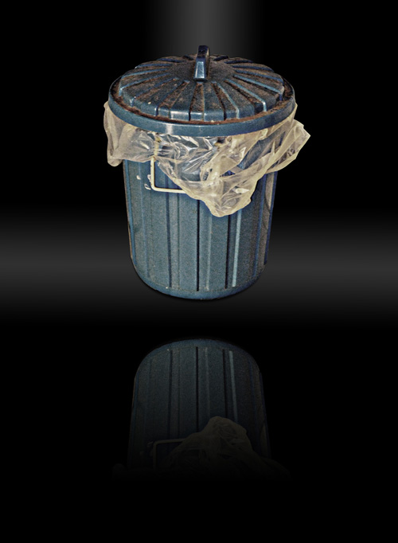

Der Badmülleimer — eine Existenz am Rande der Gesellschaft
Kennt Ihr es nicht auch? Man tappt durch die dunkle Wohnung ins Bad um sich zu erleichtern, kämpft sich tastend bis in die dunkle Fliesenkammer vor und...
Tritt den scheiß Mülleimer mit lautem Getöse um.

Naja, wer in Herren-WGs gewohnt hat, wird sich sicherlich über eine solche "Institution" wundern, nutzt man ihn doch höchstens um verbrauchte Klopapierrollen oder die alte Zahnbürste reinzuschmeißen (wenn überhaupt).
Kann die einzige Daseinsberechtigung der weibliche Hygiene- und Kosmetikbedarf für dieses komische Konstrukt der Realität sein? Ich möchte hiermit nochmal auf die alte Leier mit dem "Biegt man sich selbst, oder biegt sich der Löffel" (frei nach dem glatzköpfigen Kind aus Matrix, oder - je nach belieben - auch der Uri Geller Löffeltrick) hinweisen.
Ist sowas wirklich nötig? Oder könnte man drauf verzichten.
Was ist Eure Meinung?
[poll=5]
Dieses zweifelhafte Thema wurde vom Revolutions-Berater Lex Dildo in die Runde geworfen mit dem trockenen Kommentar "Besser ein Badmülleimer als Bad Nenndorf!".
9 Kommentare zu "Der Badmülleimer — eine Existenz am Rande der Gesellschaft"
- Externe Links im selben Fenster öffnen
- Externe Links in neuem Fenster öffnen
Herschel Rubinstein
ein sehr interessante thema, welches in der heutigen gesellschaft leider noch weitgehend totgeschwiegen wird. aber phase 5 wäre nicht phase 5, wenn es sich nicht auch solch heikler themen annehmen würde.
danke auch an lex dildo für den vorschlag, wobei ich die ansicht vertrete, dass man weder badmülleimer noch bad nenndorf braucht. aber das ist ja jedem selbst überlassen.
daki
Muss ich dem Herschel zustimmen. Zu allem Überfluss stehen in meinem Badezimmer gleich zwei Mülleimer. Aber nicht mehr lange..
TediousNilsen
dann mach vorher nen foto!
jasper.
ich hab auch keinen und bei damenbesuch, der mich darauf hinweist, weiß ich bescheid, dass es sich nicht lohnt, weitere schritte einzuleiten...
Jupp
ich muss ja gestehen, ich habe einen. er ist allerdings nicht so versifft wie der auf dem Bild. er ist praktisch, da ich dort morgens meine "Schlafkleidung" (nein ich schlafe nicht nackt) ablegen kann um dann zu duschen. und es liegen nicht etliche Klopapierrollen und Shampo- und Duschgelbehälter (wie heißen diese Teile wo Duschgel etc. drin ist?) auf dem Boden rum.
magnus
wie praktisch ein solches behältnis ist, wird man feststellen wenn man eine saftige magen-darm-grippe hat. ein ordentlicher brechdurchfall kann da zu einer deutlichen meinungsänderung führen. von wegen shampooflaschen....
@jupp: schlafkleidung in den badmülleimer?
@tedious: ne leckerere umfrage konntest du wohl nicht starten...
jetzt bleibt nur noch ein hoffen auf die nächste umfrage zum thema prostatakrebs/ milch vs. kürbiskerne
=)
Jupp
oh, ich glaube ich habe mich da ein wenig schwammig ausgedrückt. ich meine natürlich, dass ich die Sachen dort drauf lege und nicht rein. so dicke habe ich es dann doch nicht, dass ich mir jeden Tag neue Schlafklamotten leisten kann.
Herschel Rubinstein
aber lieber magnus, du weißt doch: tomaten für die prostata, kürbiskerne für die blase
magnus
Jupp, du hast definitiv ein Problem mit deinem Wecker! Der klingelt viel zu früh!